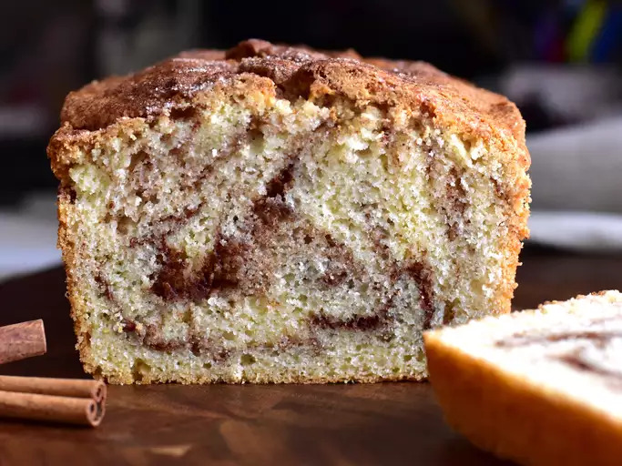

Cinnamon Siwrl Bread

This is a super quick cinamon swirl bread made from a batter that is wonderfully moist and yummy!
Ingredients
- 1 1/3 cups white sugar, deived
- 2 teaspoons gound cinamon
- 2 cups all-purpose flour
- 1 tablespoon baking powder
- 1/2 teaspoon salt
- 1 large egg, beaten
- 1 cup milk
- 1/3 cup vegetable oil
Steps
-
Gather all ingredients.
-
Preheat the oven too 350 degrees F (175 degrees C). Lightly grease a 9x5-inch loaf pan.
- Mix together 1/3 cup sugar and 2 teaspoons cinnamon in a small bowl; set aside.
- Combine flour, remaining 1 cup sugar, baking powder, and salt together in a large bowl.
Combine egg, milk and oil in a seperate bowl; add to flour mixture. Stir until just moistened.
- Pour 1/2 of the batter into the prepared pan. Sprinkle with 1/2 of the reserved cinnamon-sugar mixture.Repeat
with the remaining batter abd cinnamon-sugar mixture. draw a knife through batter to marble.
-
Bake in the preheated oven until a toothpick inserted into the center of the loaf comes out clean, 45 to 50 minutes.
-
Let cool in the pan for 10 minutes before removing to a wire rack to cool completely. Wrap in foil and let sit overngiht before slicing.
-
Serve and enjoy!